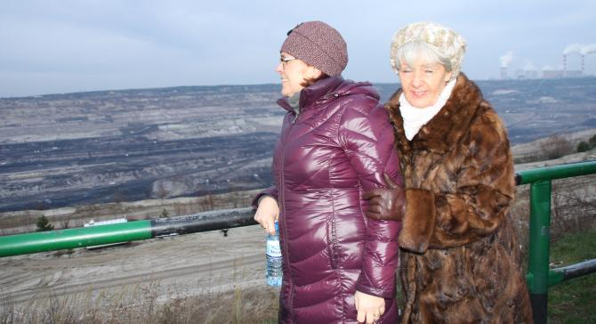

do aktualności
do aktualności2015-12-11
Pewnie ciekawi jesteście, skąd Camerata w Bełchatowie, a to proste – zaprosili nas :)
No ok już wyjaśnienie – oto ono, czyli Zbyszek nasz bas.
Mało tego ,że nas zaprosili, to jeszcze pokazali nam to "cudeńko", czyli 300-tu metrową dziurę w ziemi.
Muszę przyznać, ze robi wrażenie, no i chyba się podoba

a zwłaszcza Ance.
Szkoda, że tak dmuuuucha, brrrrrrr jak zimno. A więc jeszcze zdjęcie, żeby było wiadomo, że tu byliśmy i jedziemy na koncert.
Chwila potrzebna na rozśpiewkę i schodzimy na koncert.
Zaczynamy koncert z lekkim niepokojem, bo wchodzimy na salę konsumpcyjną, ale …
po pierwszym utworze nasz niepokój znika, pełne uznanie dla słuchaczy, idealna cisza i wspaniały odbiór koncertu. Jesteśmy pod wielkim wrażeniem.
Śpiewamy też wspólnie kolędy.
Koncert dobiega końca, akompaniuje nam Małgorzata Westrych.
Na koniec życzenia i podziękowania.
Jeszcze kilka bisów :) i owacje na stojąco.
Dziękujemy za wspaniałe przyjęcie.
do aktualności


 Prowadzenie strony: Małgorzata Wysocka-Cebula
Prowadzenie strony: Małgorzata Wysocka-Cebula